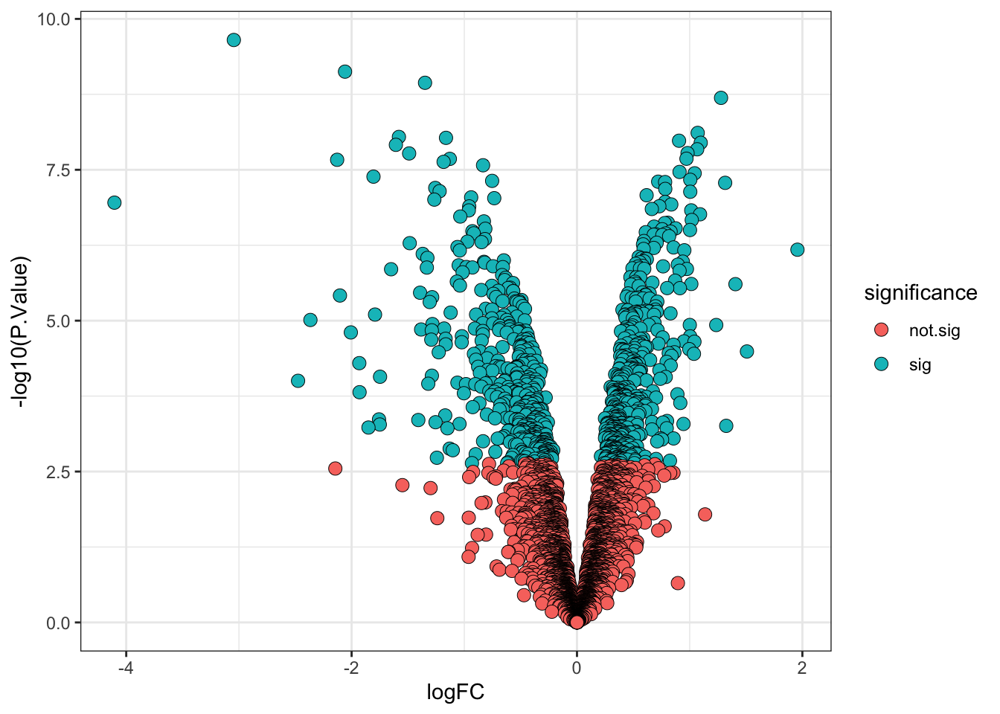

6 Statistical analysis
Learning Objectives
- Acknowledge the availability of different R/Bioconductor packages for carrying out differential expression (abundance) analyses
- Using the
limmapackage, design a statistical model to test for differentially abundant proteins between two or more conditions - Be able to interpret the output of a statistical model and annotate the results with user-defined significance thresholds
- Produce volcano plots to visualise the results of differential expression analyses
6.1 Differential expression analysis
Having cleaned our data, aggregated from PSM to protein level, completed a log2 transformation and normalised the data, we are now ready to carry out statistical analysis. The aim of this section is to answer the question: “Which proteins show a significant change in abundance between cell cycle stages?”.
Our null hypothesis is: (H0) The change in abundance for a protein between cell cycle stages is 0.
Our alternative hypothesis is: (H1) The change in abundance for a protein between cell cycle stages is greater than 0.
6.2 Selecting a statistical test
There are a few aspects of our data that we need to consider prior to deciding which statistical test to apply.
- The protein abundances in this data are not normally distributed (i.e., they do not follow a Gaussian distribution). However, they are approximately normal following a log2 transformation.
- The cell cycle is not expected to have a large impact on biological variability. We can assume that the majority of the proteome is the same between samples.
- The samples are independent not paired. For example, M_1 is not derived from the same cells as G1_1 and DS_1.
The first two points relate to two key assumptions that are made when carrying out parametric statistical tests. Parametric tests provide greater statistical power but assume that the input data has a normal distribution and equal variance. If these two assumptions are not met then it is not appropriate to use parametric testing. If we wanted to check whether the log2 protein abundances were truly Gaussian we could have applied a Shapiro-Wilk test or Kolmogorov-Smirnov test. Similarly, to check for equal variance a Levene test could be used. All of these tests are easily done within R but will not be covered in this course. Here, we will use a form of t-test since we know that these assumptions have been met.
Many different R packages can be used to carry out differential expression (abundance) analysis on proteomics data. Here we will use limma, a package that is widely used for omics analysis and has several models that allow differential abundance to be assessed in multifactorial experiments. For single comparison analyses (i.e., comparing protein abundance between two groups) we recommend limma’s empirical Bayes moderated t-test. A simple example of the empirical Bayes moderated t-test is provided in Hutchings et al. (2023). For analyses considering multiple group comparisons an empirical Bayes moderated ANOVA test can be applied. Limma will automatically select a t-test or ANOVA test depending upon how many groups (i.e., conditions) we pass to our model.
6.2.1 What is a t-test?
A t-test is a parametric statistical test used to compare the mean values of two groups, essentially asking whether the difference between means is significantly greater than 0. The output of such a test includes several parameters:
- t-value = provides a ratio between the size of the difference between means and the variation between samples within condition. The further away from 0 that a t-value lies, the more likely it is to represent a significant difference between means (large difference between conditions, small variation within conditions)
- degrees of freedom = the number of observations minus the number of independent variables (n - 1)
- p-value = the probability of achieving the t-value under the null hypothesis i.e., by chance
6.2.2 What is an Analysis of Variance (ANOVA) test?
An Analysis of Variance (ANOVA) test is also a parametric test used to compare mean values, but ANOVA considers whether means significantly differ between three or more groups. Essentially, ANOVA tests are the multi-comparison equivalent of a t-test. The output of an ANOVA test includes several parameters:
- F-value = provides a ratio of the variation between sample means (of different conditions) and the variation within the samples (of a single condition). The higher the F-value, the more likely it is that the protein has a significantly different mean abundance (large variation between means in different conditions, small variation within conditions)
- degrees of freedom = the number of observations minus the number of independent variables (n - 1)
- p-value = the probability of achieving the F-value under the null hypothesis i.e., by chance
Here, we will apply an ANOVA test to each of our proteins to ask whether the difference in the mean abundance of a protein between cell cycle stages is significantly different from 0. We use an ANOVA rather than a t-test because we have three different conditions of interest: cells in M-phase, G1-phase and desynchronised cells.
6.2.3 What does the empirical Bayes part mean?
When carrying out high throughput omics experiments we not only have a population of samples but also a population of features - here we have several thousand proteins. Whilst we do not have time to go into detail about this, considering our parameters of interest (mean, variation and difference in means) across the entire population of proteins provides us with some prior knowledge of what to expect. This prior knowledge facilitates empirical Bayesian methods (a mixture between frequentist and Bayesian statistics), a much more powerful approach than looking at the data one protein at a time.
Essentially, the empirical Bayes method borrows information across features (proteins) and shifts the per-protein variance estimates towards an expected value based on the variance estimates of other proteins with a similar abundance. This results in greater statistical power for detecting significant abundance changes for proteins with higher variation and reduces the number of false positives that arise from proteins with small variances (where normally even a small abundance change could be considered significant). For more detail about empirical Bayes methods see here.
Overall, empirical Bayes provides a way to increase the statistical power and reduce false positives within our differential abundance analysis.
6.3 Defining the statistical model
Before we apply our empirical Bayes moderated ANOVA test, we first need to set up a model. To define the model design we use model.matrix. A model matrix, also called a design matrix, is a matrix in which rows represent individual samples and columns correspond to explanatory variables, in our case the cell cycle stages. Simply put, the model design is determined by how samples are distributed across conditions.
6.3.1 With or without an intercept
When investigating the effect of a single explanatory variable, a design matrix can be created using either model.matrix(~variable) or model.matrix(~0 + variable). The difference between these two options is that the first will create a model that includes an intercept term whilst the second will exclude any intercept term. If the explantory variable is a factor, both models with and without an intercept are equivalent. If, however, the explanatory variable is a continuous variable, the two models are then fundamentally different.
In this experiment we consider our explanatory variable (cell cycle stage) to be categorical, making it of factor class in R. When modelling factor explanatory variables, models with and without an intercept are equivalent. Either option is appropriate for factor explanatory variables, but design matrices without an intercept value tend to be easier to interpret. For further guidance on generating design matrices for covariates or continuous explanatory variables, see A guide to creating design matrices for gene expression experiments.
We subset our log2 normalised protein level data since this will be the input for our statistical test. For simplicity we also remove the 1st sample, which was a single pre-treatment control. Without any replicates this condition cannot be considered in a statistical framework.
## Extract protein list from our QFeatures object - remove sample 1
all_proteins <- cc_qf[["log_norm_proteins"]][, -1]
## Ensure that conditions are stored as levels of a factor
## Explicitly define level order by cell cycle stage
all_proteins$condition <- factor(all_proteins$condition,
levels = c("Desynch", "M", "G1"))Next, we define the model matrix without any intercept term.
## Design a matrix containing all factors that we wish to model
m_design <- model.matrix(~ 0 + all_proteins$condition)
colnames(m_design) <- levels(all_proteins$condition)
## Verify
m_design Desynch M G1
1 0 1 0
2 0 1 0
3 0 1 0
4 0 0 1
5 0 0 1
6 0 0 1
7 1 0 0
8 1 0 0
9 1 0 0
attr(,"assign")
[1] 1 1 1
attr(,"contrasts")
attr(,"contrasts")$`all_proteins$condition`
[1] "contr.treatment"We also define contrasts. The contrasts represent which comparisons are of interest to us. This is important since we are not directly interested in the parameter (mean) estimates for each group but rather the differences in these parameter (mean) estimates between groups. The makeContrasts function is used by passing the name we wish to give each contrast and how this contrast should be calculated using column names from the design matrix. We also pass the levels argument to tell R where the column names come from i.e., which design matrix the contrasts are being applied to.
## Specify contrasts of interest
contrasts <- makeContrasts(G1_M = G1 - M,
M_Des = M - Desynch,
G1_Des = G1 - Desynch,
levels = m_design)
## Verify
contrasts Contrasts
Levels G1_M M_Des G1_Des
Desynch 0 -1 -1
M -1 1 0
G1 1 0 1
6.4 Running an empirical Bayes moderated test using limma
After we have specified the design matrix and contrasts we wish to make, the next step is to apply the statistical model. Since we have three conditions, this model will be an ANOVA model.
## Fit linear model using the design matrix and desired contrasts
fit_model <- lmFit(object = assay(all_proteins), design = m_design)
fit_contrasts <- contrasts.fit(fit = fit_model, contrasts = contrasts)The initial model has now been applied to each of the proteins in our data. We now update the model using the eBayes function. When we do this we include two other arguments: trend = TRUE and robust = TRUE Phipson et al. (2016) Smyth (2004).
-
trend- takes a logical value ofTRUEorFALSEto indicate whether an intensity-dependent trend should be allowed for the prior variance (i.e., the population level variance prior to empirical Bayes moderation). This means that when the empirical Bayes moderation is applied the protein variances are not squeezed towards a global mean but rather towards an intensity-dependent trend. -
robust- takes a logical value ofTRUEorFALSEto indicate whether the parameter estimation of the priors should be robust against outlier sample variances.
## Update the model using the limma eBayes algorithm
final_model <- eBayes(fit = fit_contrasts,
trend = TRUE,
robust = TRUE)6.4.1 Accessing the model results
The topTable function extracts a table of the top-ranked proteins from our fitted linear model. By default, topTable outputs a table of the top 10 ranked proteins, that is the 10 proteins with the highest log-odds of being differentially abundant. To get the results for all of our proteins we use the number = Inf argument. Let’s give this a go.
## Format results
limma_results <- topTable(fit = final_model,
coef = NULL,
adjust.method = "BH", # Method for multiple hypothesis testing
number = Inf) %>% # Print results for all proteins
rownames_to_column("Protein")
## Verify
head(limma_results) Protein G1_M M_Des G1_Des AveExpr F P.Value
1 Q9NQW6 -2.049869 0.6975787 -1.3522904 -0.0584327 572.2372 2.541829e-11
2 Q9ULW0 -2.163739 0.8367536 -1.3269854 0.2986946 550.9383 3.087468e-11
3 Q15004 -1.511759 -1.2577330 -2.7694921 0.2064893 453.5226 9.273989e-11
4 P49454 -1.806650 0.9809888 -0.8256617 -0.1204004 409.6874 1.406254e-10
5 O14965 -2.030033 0.8176069 -1.2124263 -0.1360124 393.9557 1.717643e-10
6 Q9BW19 -2.273902 1.0139601 -1.2599415 -0.4465866 390.5437 1.795663e-10
adj.P.Val
1 5.904782e-08
2 5.904782e-08
3 1.144735e-07
4 1.144735e-07
5 1.144735e-07
6 1.144735e-07As expected, we see the two key parameters of an ANOVA output - the F-value (F) and p-value (P.Value). We also see an adjusted p-value (adj.P.Val). This refers to p-value adjustment that must be done following multiple hypothesis testing.
6.4.2 Multiple hypothesis testing and correction
Using the linear model defined above, we have carried out many statistical comparisons. We have three comparisons made per protein, of which we have 3825.
Multiple testing describes the process of separately testing each null hypothesis i.e., carrying out many statistical tests at a time each to test a different hypothesis. Here we have carried out 11475 hypothesis tests. If we were to use the typical p < 0.05 significance threshold for each test we would accept a 5% chance of incorrectly rejecting the null hypothesis per test. Therefore, for every 100 tests that we carry out we expect an average of 5 false positives.
If we do not account for the fact that we have carried out multiple hypothesis then we risk including false positives in our data. Many methods exist to correct for multiple hypothesis testing and these mainly fall into two categories:
- Control of the Family-Wise Error Rate (FWER)
- Control of the False Discovery Rate (FDR)
Above we used the “BH”, or Benjamini-Hochberg procedure, to control the FDR. This accounts for multiple hypothesis testing per protein and per contrast to give us an overall view of the data.
The False Discovery Rate
The False Discovery Rate (FDR) defines the fraction of false discoveries that we are willing to tolerate in our list of differential proteins. For example, an FDR threshold of 0.05 means that around 5% of the differential proteins will be false positives. It is up to you to decide what this threshold should be, but conventionally people use 0.01 or 0.05.
6.4.3 Diagnostic plots to verify suitability of our statistical model
As with all statistical analysis, it is crucial to do some quality control and to check that the statistical test that has been applied was indeed appropriate for the data. As mentioned above, statistical tests typically come with several assumptions. To check that these assumptions were met and that our model was suitable, we create some diagnostic plots.
First we plot a histogram of the raw p-values (not BH-adjusted p-values). This can be done by passing our results data into standard ggplot2 plotting functions.
limma_results %>%
as_tibble() %>%
ggplot(aes(x = P.Value)) +
geom_histogram()
The histogram we have plotted shows an anti-conservative distribution, which is good. The flat distribution across the bottom corresponds to null p-values which are distributed approximately uniformly between 0 and 1. The peak close to 0 contains our significantly changing proteins, a combination of true positives and false positives.
Other examples of how a p-value histogram could look are shown below. Whilst in some experiments a uniform p-value distribution may arise due to an absence of significant alternative hypotheses, other distribution shapes can indicate that something was wrong with the model design or statistical test. For more detail on how to interpret p-value histograms there is a great blog by David Robinson.

The second plot that we generate is an SA plot to display the residual standard deviation (sigma) versus log abundance for each protein to which our model was fitted. We can use the plotSA function to do this.
plotSA(fit = final_model,
cex = 0.5,
xlab = "Average log2 abundance")
It is recommended that an SA plot be used as a routine diagnostic plot when applying a limma-trend pipeline. From the SA plot we can visualise the intensity- dependent trend that has been incorporated into our linear model. It is important to verify that the trend line fits the data well. If we had not included the trend = TRUE argument in our eBayes function, then we would instead see a straight horizontal line that does not follow the trend of the data. Further, the plot also colours any outliers in red. These are the outliers that are only detected and excluded when using the robust = TRUE argument.
6.4.4 Interpreting the output of our statistical model
Having checked that the model we fitted was appropriate for the data, we can now take a look at the results of our test using the topTable and decideTests functions.
Interpreting the overall ANOVA output
As we saw above, topTable will give us the overall output of our ANOVA model. We previously used this function to generate our limma_results without specifying any value for the coef argument.
head(limma_results) Protein G1_M M_Des G1_Des AveExpr F P.Value
1 Q9NQW6 -2.049869 0.6975787 -1.3522904 -0.0584327 572.2372 2.541829e-11
2 Q9ULW0 -2.163739 0.8367536 -1.3269854 0.2986946 550.9383 3.087468e-11
3 Q15004 -1.511759 -1.2577330 -2.7694921 0.2064893 453.5226 9.273989e-11
4 P49454 -1.806650 0.9809888 -0.8256617 -0.1204004 409.6874 1.406254e-10
5 O14965 -2.030033 0.8176069 -1.2124263 -0.1360124 393.9557 1.717643e-10
6 Q9BW19 -2.273902 1.0139601 -1.2599415 -0.4465866 390.5437 1.795663e-10
adj.P.Val
1 5.904782e-08
2 5.904782e-08
3 1.144735e-07
4 1.144735e-07
5 1.144735e-07
6 1.144735e-07Interpreting the output of topTable for a multi-contrast model:
-
G1_M,M_DesandG1_Des= the estimated log2FC for each model contrast -
AveExpr= the average log abundance of the protein across samples -
F= eBayes moderated F-value. Interpreted in the same way as a normal F-value (see above). -
P.Value= Unadjusted p-value -
adj.P.Val= FDR-adjusted p-value (adjusting across both proteins and contrasts - global adjustment)
We have used the ANOVA test to ask “Does this protein show a significant change in abundance between cell cycle stages?” for each protein.
Our null hypothesis is: (H0) The change in abundance for a protein between cell cycle stages is 0. In other words, the null hypothesis for each protein is that the mean abundance in M-phase = the mean abundance in G1-phase = the mean abundance in desynchronised cells. So, G1_M = M_Des = G1_Des = 0.
Our alternative hypothesis is: (H1) The change in abundance for a protein between cell cycle stages is greater than 0.
From our output we can see that some of our proteins have high F-values and low adjusted p-values (below any likely threshold of significance). These adjusted p-values may tell us that a protein has a significantly different abundance across cell cycle stages. However, we cannot tell from this output from which contrast this significance is derived. Does a protein have a significantly different abundance between M- and G1-phase, or M-phase and desynchronised cells, or G1-phase and desynchronised cells, or even multiple of these comparisons?
Interpreting the results of a single contrast
We can look at individual contrasts by passing the contrast name to the coef argument in the topTable function. For example, let’s look at the pairwise comparison between M-phase and desynchronised cells. We use the topTable function to get the results of the "M_Des" contrast. We use the argument confint = TRUE so that the our output reports the 95% confidence interval of the calculated log2FC.
M_Desynch_results <- topTable(fit = final_model,
coef = "M_Des",
number = Inf,
adjust.method = "BH",
confint = TRUE) %>%
rownames_to_column("protein")
## Verify
head(M_Desynch_results) protein logFC CI.L CI.R AveExpr t P.Value
1 P31350 -3.045183 -3.3264149 -2.763952 -0.5756422 -24.03475 2.236285e-10
2 O60732 -2.058507 -2.2727461 -1.844267 0.3551997 -21.32766 7.478665e-10
3 O43583 -1.348484 -1.4959908 -1.200977 0.3797734 -20.27672 1.144324e-09
4 O00622 1.278311 1.1302938 1.426329 -0.3781623 19.15527 2.033050e-09
5 O43663 1.071216 0.9295235 1.212909 0.1547363 16.76849 7.744863e-09
6 Q96PU5 -1.580262 -1.7911478 -1.369377 -0.1603462 -16.63308 9.030420e-09
adj.P.Val B
1 8.553790e-07 14.21630
2 1.430295e-06 13.15685
3 1.459014e-06 12.77438
4 1.944104e-06 12.24499
5 4.670537e-06 10.98014
6 4.670537e-06 10.83491Interpreting the output of topTable for a single contrast:
-
logFC= the fold change between the mean log abundance in group A and the mean log abundance in group B -
CI.L= the left limit of the 95% confidence interval for the reported log2FC -
CI.R= the right limit of the 95% confidence interval for the reported log2FC -
AveExpr= the average log abundance of the protein across samples -
t= t-statistic derived from the original ANOVA test (not a t-test) -
P.Value= Unadjusted p-value -
adj.P.Val= FDR-adjusted p-value (adjusted across proteins but not multiple contrasts) -
B= B-statistic representing the log-odds that a protein is differentially abundant between conditions
This time the output of topTable contains a t-statistic rather than an F-value. This is because we only told the function to compare two conditions, so the corresponding t-statistic from our ANOVA test is reported. Importantly, however, the p-value adjustment in this case only accounts for multiple tests across our 3825 proteins, not the three different contrasts/comparisons we used the data for. As a result, we could over-estimate the number of statistically significant proteins within this contrast. although this this effect is only likely to become problematic when we have a larger number of contrasts to account for.
Interpreting the results of all contrasts
To understand the impact of adjusting for multiple hypothesis testing across our comparisons, we can use the decideTests function. This function provides a matrix of values -1, 0 and +1 to indicate whether a protein is significantly downregulated, unchanged or significantly upregulated in a given contrast. For the function to determine significance we have to provide a p-value adjustment method and threshold, here we use the standard Benjamini-Hochberg procedure for FDR adjustment and set a threshold of adj.P.Value < 0.01 for significance.
The decideTests function also takes an argument called method. This argument specifies whether p-value adjustment should account only for multiple hypothesis tests across proteins ("separate") or across both proteins and contrasts ("global").
Let’s first look at the results when we apply the "separate" method i.e., consider each contrast separately.
decideTests(object = final_model,
adjust.method = "BH",
p.value = 0.01,
method = "separate") %>%
summary() G1_M M_Des G1_Des
Down 377 422 70
NotSig 3177 2930 3722
Up 271 473 33From this table we can see the number of significantly changing proteins per contrast. For the M_Des comparison the total number of significantly changing proteins is 895. This should be the same as the number of proteins with an adjusted p-value < 0.01 in our M_Desynch_results object. Let’s check.
However, if we use the "global" method for p-value adjustment and therefore adjust for both per protein and per contrast hypotheses we may see slightly fewer significant proteins in our M_Des contrast.
decideTests(object = final_model,
adjust.method = "BH",
p.value = 0.01,
method = "global") %>%
summary() G1_M M_Des G1_Des
Down 355 373 115
NotSig 3223 3040 3639
Up 247 412 71Unfortunately, there is no way to specify global p-value adjustment accounting for all contrasts when using topTable to look at a single contrast. Instead, we can merge the results from our globally adjusted significance summary (generated using decideTests with method = "global") with the results of our overall ANOVA test (generated using topTable with coef = NULL). We demonstrate how to do this in the code below.
## Determine global significance using decideTests
global_sig <- decideTests(object = final_model,
adjust.method = "BH",
p.value = 0.01,
method = "global") %>%
as.data.frame() %>%
rownames_to_column("protein")
## Change column names to avoid conflict when binding
colnames(global_sig) <- paste0("sig_", colnames(global_sig))
## Add the results of global significance test to overall ANOVA results
limma_results <- dplyr::left_join(limma_results,
global_sig,
by = c("Protein" = "sig_protein"))
## Verify
limma_results %>% head() Protein G1_M M_Des G1_Des AveExpr F P.Value
1 Q9NQW6 -2.049869 0.6975787 -1.3522904 -0.0584327 572.2372 2.541829e-11
2 Q9ULW0 -2.163739 0.8367536 -1.3269854 0.2986946 550.9383 3.087468e-11
3 Q15004 -1.511759 -1.2577330 -2.7694921 0.2064893 453.5226 9.273989e-11
4 P49454 -1.806650 0.9809888 -0.8256617 -0.1204004 409.6874 1.406254e-10
5 O14965 -2.030033 0.8176069 -1.2124263 -0.1360124 393.9557 1.717643e-10
6 Q9BW19 -2.273902 1.0139601 -1.2599415 -0.4465866 390.5437 1.795663e-10
adj.P.Val sig_G1_M sig_M_Des sig_G1_Des
1 5.904782e-08 -1 1 -1
2 5.904782e-08 -1 1 -1
3 1.144735e-07 -1 -1 -1
4 1.144735e-07 -1 1 -1
5 1.144735e-07 -1 1 -1
6 1.144735e-07 -1 1 -1We now have three additional column, one per contrast, called sig_G1_M, sig_M_Des, and sig_G1_Des. These columns contain -1, 0 or 1 meaning that the protein is significantly downregulated, non-significant or significantly upregulated in the given contrast.
Adding user-defined significance thresholds
For the remainder of this workshop we will consider only the M_Des single contrast and use the results of topTable with coef = "M_Des". We currently have these results stored in an object called M_Desynch_results.
The output of our statistical test will provide us with key information for each protein, including its p-value, BH-adjusted p-value (here, across proteins but not contrasts) and logFC. However, it is up to us to decide what we consider to be significant. The first parameter to consider is the adj.P.Val threshold that we wish to apply - 0.05 and 0.01 are both common in proteomics. The second parameter which is sometimes used to define significance is the logFC. This is mainly for the purpose of deciding on hits to follow-up, since it is easier to validate larger abundance changes than those which are consistent but subtle.
Here we are going to define significance based on an adj.P.Val < 0.01. We can add a column to our results to indicate significance as well as the direction of change.
## Add direction and significance information
M_Desynch_results <-
M_Desynch_results %>%
as_tibble() %>%
mutate(direction = ifelse(logFC > 0, "up", "down"),
significance = ifelse(adj.P.Val < 0.01, "sig", "not.sig"))
## Verify
head(M_Desynch_results)# A tibble: 6 × 11
protein logFC CI.L CI.R AveExpr t P.Value adj.P.Val B direction
<chr> <dbl> <dbl> <dbl> <dbl> <dbl> <dbl> <dbl> <dbl> <chr>
1 P31350 -3.05 -3.33 -2.76 -0.576 -24.0 2.24e-10 0.000000855 14.2 down
2 O60732 -2.06 -2.27 -1.84 0.355 -21.3 7.48e-10 0.00000143 13.2 down
3 O43583 -1.35 -1.50 -1.20 0.380 -20.3 1.14e- 9 0.00000146 12.8 down
4 O00622 1.28 1.13 1.43 -0.378 19.2 2.03e- 9 0.00000194 12.2 up
5 O43663 1.07 0.930 1.21 0.155 16.8 7.74e- 9 0.00000467 11.0 up
6 Q96PU5 -1.58 -1.79 -1.37 -0.160 -16.6 9.03e- 9 0.00000467 10.8 down
# ℹ 1 more variable: significance <chr>6.5 Visualising the results of our statistical model

The final step in any statistical analysis is to visualise the results. This is important for ourselves as it allows us to check that the data looks as expected.
The most common visualisation used to display the results of expression proteomics experiments is a volcano plot. This is a scatterplot that shows statistical significance (p-values) against the magnitude of fold change. Of note, when we plot the statistical significance we use the raw unadjusted p-value (-log10(P.Value)). This is because it is better to plot the basic data in its raw form than any derived value (the adjusted p-value is derived from each p-value using the BH-method of correction). The process of FDR correction can result in some points that previously had distinct p-values having the same adjusted p-value. Further, different methods of correction will generate different adjusted p-values, making the comparison and interpretation of values more difficult.
M_Desynch_results %>%
ggplot(aes(x = logFC, y = -log10(P.Value), fill = significance)) +
geom_point(shape = 21, stroke = 0.25, size = 3) +
theme_bw()
There are several ways in which we can export this volcano plot from R. One option is to use the ggsave function immediately after our plotting code. The default for this function is to save the last plot displayed.
my_results %>%
ggplot(aes(x = logFC, y = -log10(P.Value), fill = result)) +
geom_point(shape = 21, stroke = 0.25, size = 3) +
theme_bw()
ggsave(filename = "volcano_M_vs_Desynch.png", device = "png")
Key Points
- The
limmapackage provides a statistical pipeline for the analysis of differential expression (abundance) experiments - Empirical Bayes moderation involves borrowing information across proteins to squeeze the per-protein variance estimates towards an expected value based on the behaviour of other proteins with similar abundances. This method increases the statistical power and reduces the number of false positives.
- Since proteomics data typically shows an intensity-dependent trend, it is recommended to apply empirical Bayes moderation with
trend = TRUEandrobust = TRUE. This approach can be validated by plotting an SA plot. - Significance thresholds are somewhat arbitary and must be selected by the user. However, correction must be carried out for multiple hypothesis testing so significance thresholds should be based on adjusted p-values rather than raw p-values. Users may also threshold significance based on a log fold-change value too.
- The results of differential expression and abundance analyses are often summarised on volcano plots.
References
Hutchings, Charlotte, Charlotte S. Dawson, Thomas Krueger, Kathryn S. Lilley, and Lisa M. Breckels. 2023. “A Bioconductor Workflow for Processing, Evaluating, and Interpreting Expression Proteomics Data.” F1000Research 12 (October): 1402. https://doi.org/10.12688/f1000research.139116.1.
Phipson, Belinda, Stanley Lee, Ian J. Majewski, Warren S. Alexander, and Gordon K. Smyth. 2016. “Robust Hyperparameter Estimation Protects Against Hypervariable Genes and Improves Power to Detect Differential Expression.” The Annals of Applied Statistics 10 (2). https://doi.org/10.1214/16-aoas920.
Smyth, Gordon K. 2004. “Linear Models and Empirical Bayes Methods for Assessing Differential Expression in Microarray Experiments.” Statistical Applications in Genetics and Molecular Biology 3 (1): 1–25. https://doi.org/10.2202/1544-6115.1027.